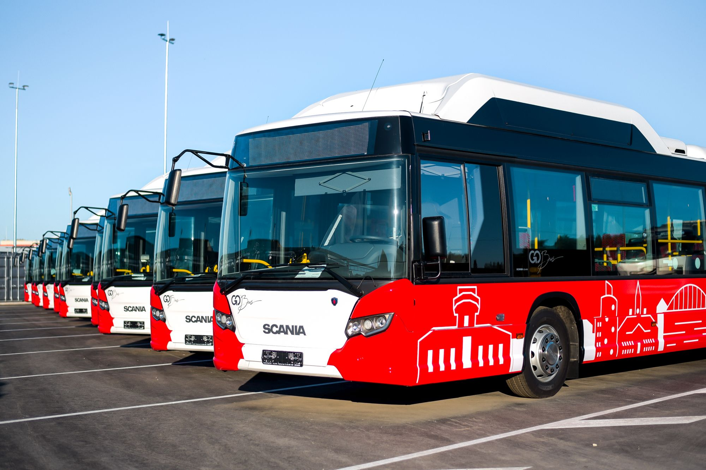

Bussiajad:

Pilt võetud lehelt https://www.tartu.ee/et/tartu-bussipidu
Siia tuleb API-lt andmed kenas formaadis.
Näidis API requestist:
Siin
Pilt võetud lehelt https://www.tartu.ee/et/tartu-bussipidu
Siia tuleb API-lt andmed kenas formaadis.
Näidis API requestist:
Siin